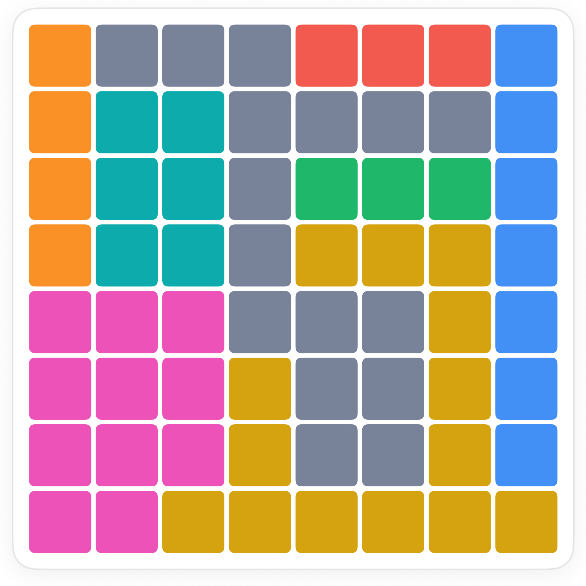
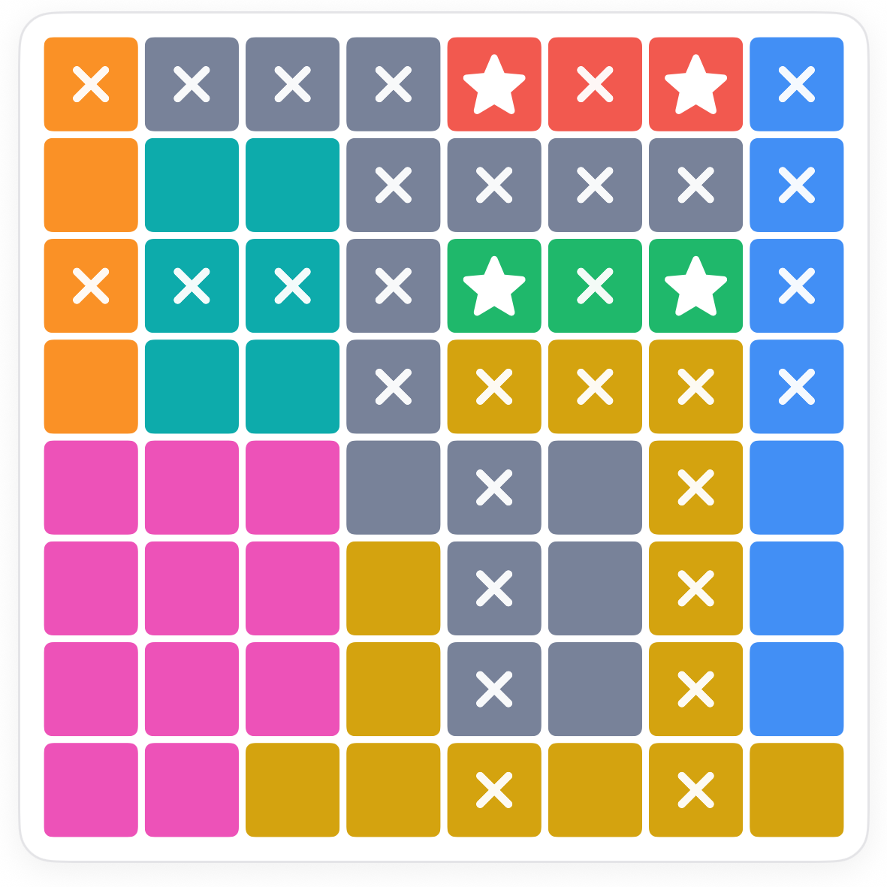
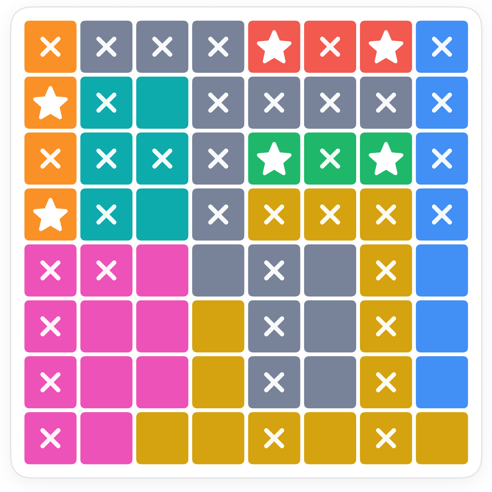
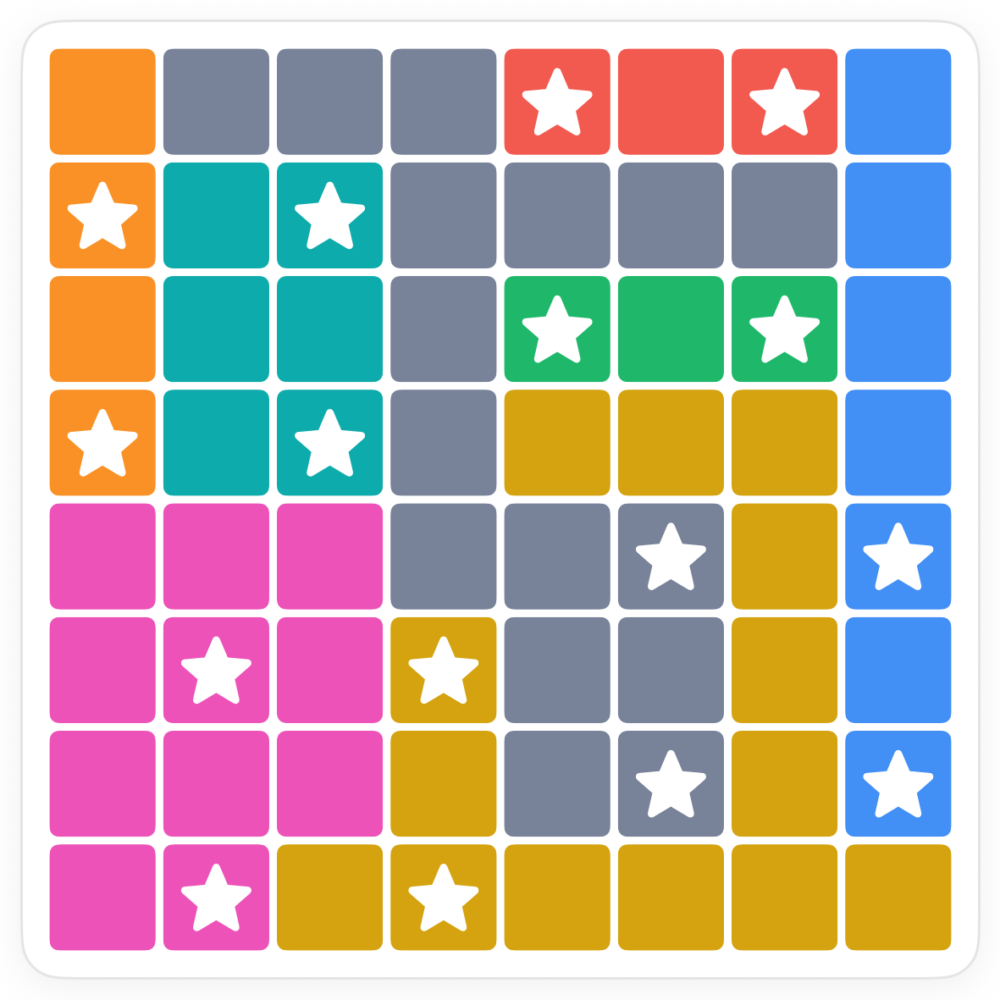

How to play Twins Stars.
Twins is Stars with the count doubled: every row, every column and every region holds exactly two stars, and stars still never touch. The boards are bigger, and the smallest regions are where you start.
The board.
An 8 by 8 grid in eight coloured regions. Some regions are big and blocky; two of them are only three squares long.

The rule.
Same taps as classic: once for an X, twice for a star. Placing a star X's every square it rules out.
A region of three in a row.
Two stars that cannot touch need at least one square between them. So a region that is just three squares in a line has only one way to hold both: a star at each end.

A spent row.
A row that already holds two stars is spent: no other region can use it. That knocks squares out of every region crossing it, and often leaves a region with exactly one way left.


Common questions.
Can the two stars of a region touch?
No. The no-touching rule applies to every pair of stars on the board, whichever region they belong to.
Why are the boards bigger?
Two stars need room. An 8 by 8 board is the smallest that holds two per line comfortably; harder levels grow from there.